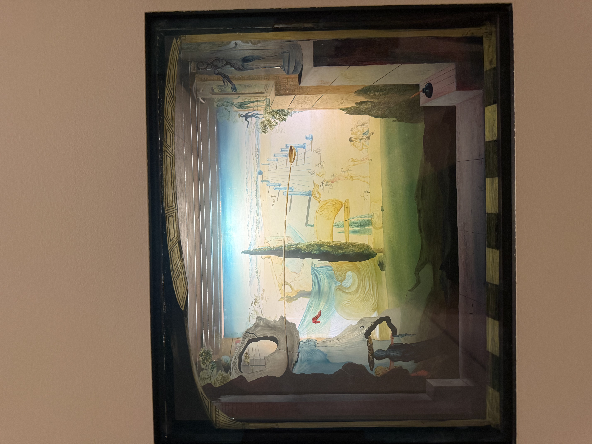
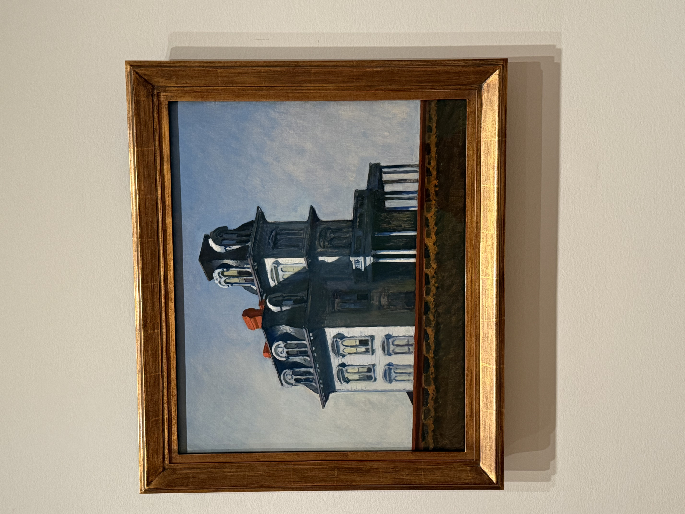
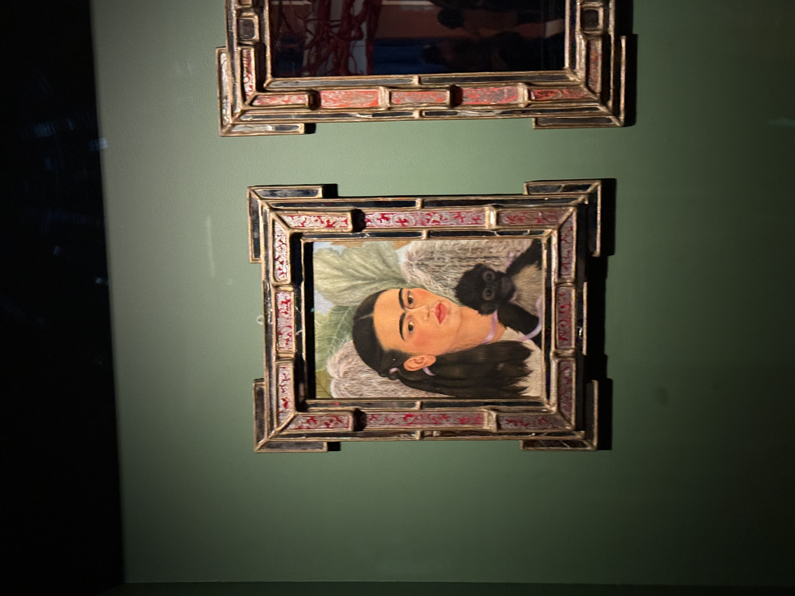
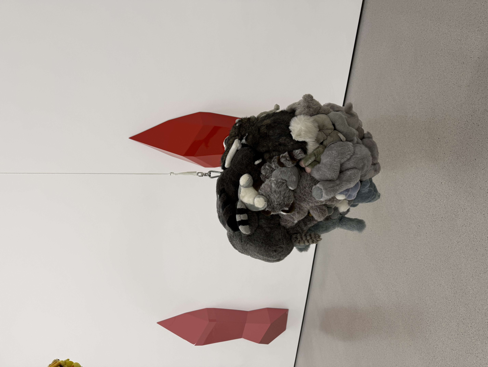
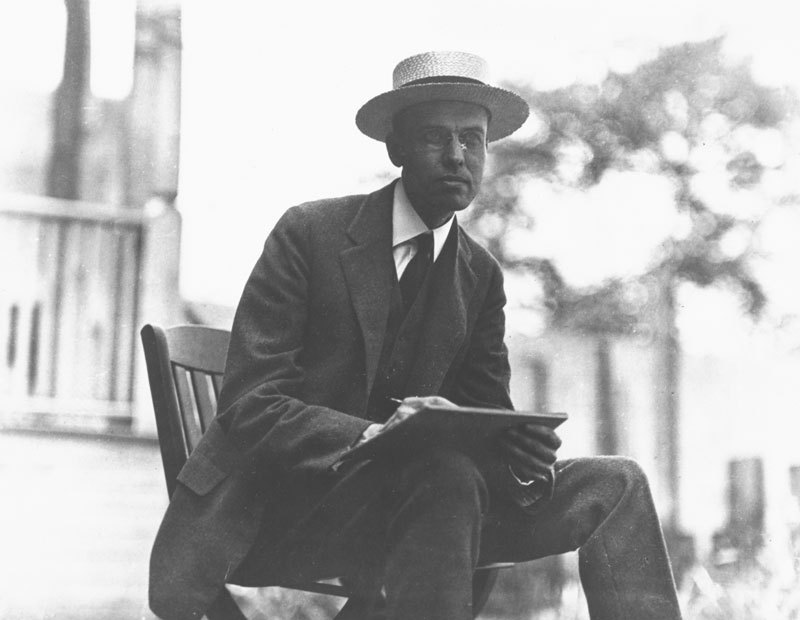

Frida Kahlo
1907-1954
Frida is a Mexican painter known for her many portraits, self-portraits, and works inspired by the nature and artifacts of Mexico. I was impressed by her intimate self-portraits and her vivid use of colors.
After the dessert, we took the train to MoMA to visit the museum.
We spent the afternoon at the Museum of Modern Art.
MoMA boasts a large collection of arts including that of Henri Matisse, Vincent van Gogh, and Andy Warhol.
The museum is divided into floors by year and the collections cover arts from the 1880s to today.
One highlight at MoMA recently is the exhibition Frida and Diego: The Last Dream, which celebrates Frida Kahlo and Diego Rivera
-- two of Mexico's most beloved icons of 20th-century art.
I first learned about Frida and Diego through the 2002 film Frida starring Salma Hayek.
The exhibition is organized in conjunction with the Met's new production fo El Último Sueño de Frida y Diego, and it features
artworks by Kahlo and Rivera in an elaborate setting designed by Jon Bausor, the set and co-costume designer of the opera.




Scroll sideways to explore.
Click on the artist's photograph for more information.
1907-1954
Frida is a Mexican painter known for her many portraits, self-portraits, and works inspired by the nature and artifacts of Mexico. I was impressed by her intimate self-portraits and her vivid use of colors.

1904-1989
Dalí was a Spanish surrealist artist renowned for his technical skill, precise draftsmanship, and the striking and bizarre images in his work. I am dazzled by the representation of dreamscape and dreamlike imagery in his paintings.

1882-1967
Edward Hopper was an American realist painter and printmaker. He is best known for his evocative, quiet depictions of modern urban and rural solitude in the 20th century. I am drawn to his use of sharp, dramatic lighting and clean geometric lines.